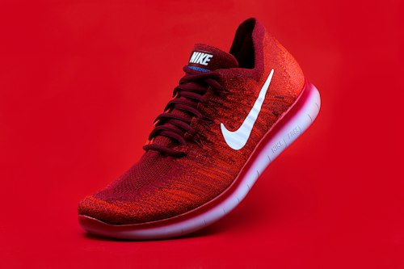

Sepatu Kotor Jadi Baru Lagi Tanpa Repot Keluar Rumah.
Layanan cuci sepatu profesional dengan 100% sabun organik ramah serat kain, sterilisasi lampu UV-C anti-bakteri, serta garansi cuci ulang gratis jika Anda belum 100% puas.

Free Pick-Up & Delivery
Kurir kami siap jemput ke rumah, kos, atau kantor radius 5 km tanpa biaya transport tambahan.
100% Eco-Cleaner Organik
Menggunakan pembersih berbasis minyak kelapa & jojoba oil, tanpa pemutih keras perusak lem.
UV-C Sterilization 99.9%
Ruang sterilisasi ozon & UV-C membasmi bakteri penyebab bau kaki tak sedap hingga ke pori terdalam.
Garansi Cuci Ulang
Jika masih ada noda yang tertinggal dari standar paket, kami proses ulang gratis tanpa banyak tanya.

Merawat Setiap Pasang dengan Sentuhan Presisi.
“Sepatu bukan sekadar alas kaki, tapi cerminan karakter dan langkah perjalanan pemiliknya.”
SHOE LAB didirikan oleh para pencinta sneakers yang jenuh dengan layanan laundry biasa yang seringkali mencuci sepatu dengan detergen baju berbusa banyak yang justru merusak lem, memudarkan suede, dan membuat sol menguning (*yellowing*).
Di workshop kami, setiap pasang diinspeksi materialnya terlebih dahulu. Kami memisahkan sikat bulu kuda untuk suede lembut, bulu sintetis untuk kanvas tebal, serta menggunakan formula enzim pengurai noda minyak yang aman 100%.
Melihat Proses Pengerjaan: Sikat Mikro, Sol Unyellowing & Sterilisasi UV-C
Dry Brushing & Pengangkatan Partikel
Menyikat debu kering, kerikil sol, dan serat kotoran mikroskopis sebelum terkena air agar tidak meresap ke dalam pori rajutan knit.
Active Organic Foam Scrubbing
Pembersihan dengan busa organik berkadar air minim. Sikat lembut khusus mengembalikan warna cerah tanpa melukai serat benang.
Cold-Air Dry & UV-C Sanitizing
Sepatu dikeringkan di ruangan bersuhu sejuk 22°C tanpa panas matahari langsung, lalu disterilkan dengan sinar UV-C agar bebas kuman.
Pilihan Treatment Sesuai Kondisi Sepatu Anda.
Dari pembersihan harian ekspres hingga restorasi total sepatu kulit dan sol yang menguning.
 24 Jam Kilat
24 Jam Kilat
Fast Cleaning
Pembersihan cepat bagian luar yang terlihat untuk sepatu harian yang butuh tampil prima esok hari.
- Upper exterior cleaning
- Midsole wipe & scrub
- Deodorizing spray wangi segar
2–3 Hari Teliti
Deep Cleaning
Pencucian menyeluruh luar dan dalam untuk sepatu berdebu tebal, berlumpur, atau berbau apek.
- Upper, insole & outsole teliti
- Pencucian tali sepatu (*laces*)
- Sterilisasi UV-C anti-bakteri

3–4 Hari KhususUnyellowing Boost
Treatment oksidasi khusus untuk mengembalikan sol karet / boost yang menguning akibat usia dan panas.
- Midsole de-oxidation paste
- UV chamber light activation
- Termasuk Deep Clean gratis
3 Hari Spa
Leather & Suede Care
Perawatan khusus sepatu formal kulit asli, boots Docmart, dan suede sneakers agar tidak kaku & berjamur.
- Natural leather balm & polish
- Suede re-fluffing brass brush
- Water-repellent nano coating
Geser Slider Untuk Melihat Transformasi Hasil Cuci.
Perbedaan nyata antara sneaker penuh noda kotoran jalanan versus hasil pembersihan teliti di Shoe Lab.
Teknik Berbeda Untuk Setiap Jenis Sepatu.
Kami tidak pernah menggunakan satu formula sabun untuk semua material. Setiap bahan memiliki perlakuan khas.
Primeknit & Mesh
Dibersihkan dengan sikat bulu babi super-lembut agar serat rajutan (seperti Yeezy & Ultraboost) tidak berbulu atau melar.
Suede & Nubuck
Tanpa air berlebih (*dry foam wash*) untuk mencegah bulu suede mengeras, diikuti teknik *nap revival* penyisiran lembut.
Full-Grain Leather
Dibersihkan dengan leather saddle soap organik, lalu dilapisi conditioner minyak alami agar kulit lentur & bebas retak.
Canvas & Daily Sneakers
Pembersihan mendalam untuk sepatu Vans & Converse harian, menghilangkan lumpur tanpa meninggalkan bercak kuning (*water marks*).
Paket Perawatan Paling Menguntungkan.
Pilihan paket bundling cuci sepatu terbaik dengan potongan harga dan gratis fasilitas penjemputan.
Starter Fast Clean
- Fast cleaning upper & midsole
- Pengerjaan kilat 24 jam
- Semprot parfum anti-apek
- Tidak termasuk deep cleaning insole
- Jemput minimal 2 pasang
Duo Clean Combo
- Deep Cleaning 2 Pasang menyeluruh
- GRATIS Antar-Jemput radius 5 km
- Pembersihan tali (*laces*) & insole
- Sterilisasi kabin UV-C anti-bakteri
- Plastik segel & silica gel proteksi
Ultimate Restoration
- Deep Clean menyeluruh luar-dalam
- Unyellowing Sol Treatment
- Nano Water Repellent Coating
- Gratis antar-jemput VIP
- Garansi proteksi hingga 30 hari
Hitung Biaya Cuci & Add-on Sesuai Kebutuhan Anda.
Pilih jumlah pasang sepatu, tipe pencucian, dan add-on perlindungan tambahan. Estimasi biaya langsung terangkum otomatis.
Portofolio Sneaker Yang Telah Kami Tangani.
Klik salah satu foto untuk melihat detail kebersihan dan kerapian pengerjaan kami.
4 Langkah Praktis Sepatu Kembali Segar.
Tidak perlu macet-macetan ke mall atau gerai cuci. Semua selesai dari kenyamanan rumah Anda.
Isi Form / Chat WA
Tentukan jumlah sepatu, pilihan treatment, dan jadwal penjemputan via WhatsApp admin kami.
Kurir Menjemput
Kurir Shoe Lab mengambil sepatu di alamat Anda dan memberikan nota digital resmi.
Pencucian & QC Lab
Sepatu dicuci sesuai SOP material, dikeringkan suhu sejuk, dan disterilkan lampu UV-C.
Diantar Kembali
Sepatu wangi, bersih, terbungkus rapi diantar ke tangan Anda. Pembayaran aman via transfer / COD.
Apa Kata Mereka Tentang Layanan Shoe Lab?
Ulasan asli dari para pemilik sneakers, pekerja kantoran, dan pengguna harian di Jabodetabek.
“Yeezy 350 saya yang kena kecap pas makan sate tadinya saya kira udah pasrah. Kirim ke Shoe Lab via paket Duo Clean, balik-balik benang rajutannya putih bersih lagi tanpa bikin melar! Mantap banget.”

Kevin Pratama
Sneakerhead • Tebet Barat“Layanan antar-jemputnya sangat menolong untuk orang kantoran yang ga sempat mampir ke mall. Jam 8 pagi dijemput di lobi kantor SCBD, 2 hari kemudian diantar wangi dan tersegel rapi.”

Dina Safitri
Product Manager • SCBD Jakarta“Treatment unyellowing sol untuk Air Jordan 1 saya hasilnya beneran keliatan seperti baru keluar dari kardus. Harga sangat masuk akal dibanding beli sepatu baru lagi.”

Rizky Ramadhan
Content Creator • KemangPertanyaan Yang Sering Diajukan.
Punya pertanyaan seputar layanan kami? Temukan jawabannya secara transparan di bawah ini.
Apakah ada biaya tambahan untuk antar-jemput sepatu?
Berapa lama estimasi waktu pengerjaan cuci sepatu?
Bagaimana jika noda pada sepatu tidak hilang sepenuhnya?
Apakah sabun yang digunakan aman untuk sepatu suede dan kulit asli?
Bagaimana metode pembayaran yang tersedia?
Bagaimana cara mengetahui status pengerjaan sepatu saya?
Sepatu Kesayangan Anda Siap Dibuat Kinclong Hari Ini?
Ambil promo Duo Clean Combo (Rp 75.000 / 2 pasang) + Gratis Antar-Jemput sekarang juga. Tim kurir kami siap menjemput sesuai jadwal yang Anda tentukan!
Booking Penjemputan SekarangLokasi Cabang Workshop & Drop Point Shoe Lab.
Kunjungi gerai workshop terdekat di kota Anda atau manfaatkan layanan kurir antar-jemput gratis langsung ke tempat Anda.
Shoe Lab Tebet
Jl. Tebet Timur Dalam Raya No. 42, Tebet, Jakarta Selatan 12820 (Dekat Stasiun Tebet)
Shoe Lab Bintaro
Ruko Bintaro Arcade 2 Blok B No. 8, Bintaro Sektor 7, Pondok Aren, Tangerang Selatan 15224
Shoe Lab Kelapa Gading
Boulevard Raya Blok QA 1 No. 12, Kelapa Gading Barat, Jakarta Utara 14240
Shoe Lab Kemang
Jl. Kemang Raya No. 27B, Bangka, Mampang Prapatan, Jakarta Selatan 12730
Jadwalkan Penjemputan Sepatu Anda.
Isi formulir ringkas di bawah ini untuk tersambung otomatis ke WhatsApp admin kami, atau kunjungi workshop kami secara langsung.
Formulir Booking Antar-Jemput
Pesan disusun rapi otomatis ke WhatsApp tanpa perlu mengetik manual.
SHOE LAB Workshop Tebet
Jl. Tebet Timur Dalam Raya No. 42, RT.04/RW.06, Tebet Timur, Kec. Tebet, Kota Jakarta Selatan, DKI Jakarta 12820